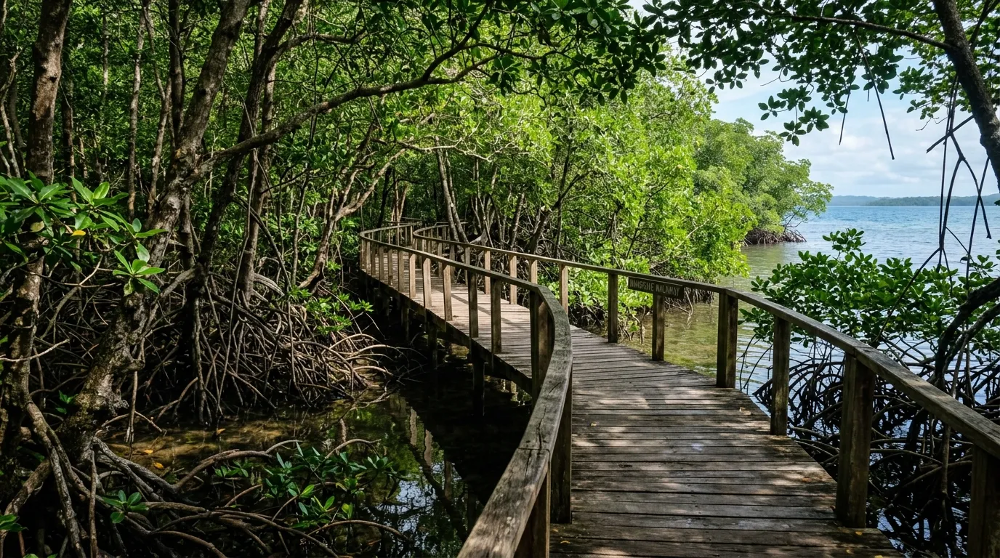
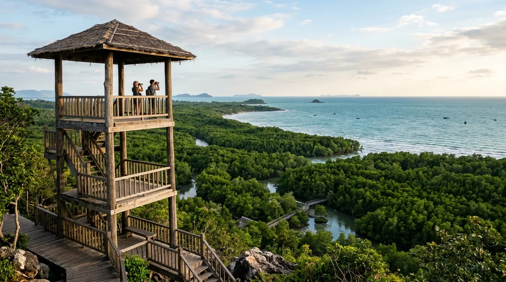

- Sekilas Tentang Pantai Watu Leter
- Pesona Hutan Mangrove yang Masih Asri
- Keindahan Pantai dengan Ombak yang Tenang
- Aktivitas Seru di Pantai Watu Leter
- Fasilitas di Pantai Watu Leter
- Harga Tiket Masuk dan Jam Operasional
- Rute Menuju Pantai Watu Leter
- Tips Berkunjung ke Pantai Watu Leter
- Kesimpulan
- FAQ Seputar Pantai Watu Leter
Bagi pencinta wisata alam yang mendambakan suasana pantai yang benar-benar jauh dari keramaian, Pantai Watu Leter adalah salah satu jawabannya. Terletak di kawasan Malang Selatan yang masih tergolong sepi pengunjung, pantai ini menawarkan kombinasi unik antara pasir putih, air laut yang jernih, dan hamparan mangrove Malang yang masih terjaga kelestariannya.
Kombinasi inilah yang membuat Watu Leter kerap dijuluki sebagai salah satu hidden gem tersembunyi di pesisir selatan Malang. Simak ulasan lengkapnya berikut ini.
Pantai Watu Leter menawarkan perpaduan unik antara pasir putih, ombak tenang, kejernihan air laut, serta rimbunnya hutan mangrove yang menjadikannya hidden gem di pesisir selatan Malang.
Sekilas Tentang Pantai Watu Leter
Pantai Watu Leter berlokasi di Dusun Rowotrate, Desa Sitiarjo, Kecamatan Sumbermanjing Wetan, Kabupaten Malang, Jawa Timur. Jaraknya sekitar 60-70 km dari pusat Kota Malang, dengan waktu tempuh sekitar 2 hingga 3 jam perjalanan menggunakan kendaraan pribadi.
Lokasinya berdekatan dengan Pantai Goa Cina, sehingga sering dijadikan destinasi tambahan bagi wisatawan yang sudah mampir ke pantai populer tersebut. Meski begitu, Watu Leter belum sepopuler Goa Cina karena akses menuju lokasinya cukup menantang, sehingga jumlah pengunjungnya masih relatif sedikit dibanding pantai-pantai lain di Malang Selatan. Justru karena alasan inilah suasana pantai ini terasa lebih tenang dan alami, menjadikannya pilihan tepat bagi wisatawan yang ingin menjauh dari keramaian.
Pesona Hutan Mangrove yang Masih Asri
Salah satu daya tarik paling khas dari Pantai Watu Leter adalah keberadaan hutan mangrove yang tumbuh subur di sepanjang kawasan pantai. Berbeda dari kebanyakan pantai di Malang Selatan yang didominasi tebing karang, Watu Leter justru diselimuti rimbunnya pepohonan bakau yang menciptakan suasana teduh dan sejuk, bahkan di tengah teriknya matahari siang.
Hutan mangrove ini bukan sekadar elemen estetika. Keberadaannya berperan penting sebagai penahan abrasi pantai sekaligus menjadi habitat bagi berbagai jenis satwa, mulai dari burung-burung pesisir hingga biota kecil yang hidup di sela-sela akar bakau. Udara sejuk dan suasana teduh di sekitar kawasan mangrove membuat pengunjung betah berlama-lama menyusuri jalur setapak yang tersedia.
Bagi yang ingin menikmati pemandangan dari sudut yang lebih luas, tersedia pula menara pandang yang bisa digunakan untuk melihat panorama hutan mangrove berpadu dengan birunya laut lepas di kejauhan. Menjelajahi hutan mangrove sambil berburu foto menjadi salah satu aktivitas favorit wisatawan yang datang ke Watu Leter.

Keindahan Pantai dengan Ombak yang Tenang
Berbeda dari kebanyakan pantai selatan Jawa yang identik dengan ombak besar, Pantai Watu Leter justru memiliki karakter ombak yang relatif tenang dan tidak terlalu kuat. Kondisi ini menjadikan Watu Leter salah satu pantai yang cukup ramah untuk bermain air maupun berenang dibanding pantai-pantai lain di kawasan Malang Selatan.
Airnya yang jernih membuat pengunjung bisa melihat langsung pemandangan bawah laut, mulai dari terumbu karang, ikan-ikan kecil, hingga biota laut lain seperti cacing laut dan keong. Bagi pencinta snorkeling, spot ini menjadi salah satu daya tarik utama yang sayang untuk dilewatkan. Hamparan pasir putihnya yang lembut, dipadukan dengan jajaran karang yang ditumbuhi tanaman hijau, menciptakan panorama eksotis yang membuat siapa pun betah berlama-lama di tepi pantai.
Sebagai nilai tambah, kawasan ini juga dikenal sebagai salah satu lokasi yang masih didatangi penyu untuk bertelur, menjadikan Watu Leter destinasi yang menarik bagi wisatawan yang tertarik dengan konservasi satwa laut sekaligus wisata alam.
Aktivitas Seru di Pantai Watu Leter
Ada berbagai aktivitas menarik yang bisa dilakukan wisatawan selama berkunjung ke Pantai Watu Leter, di antaranya:
- Menjelajahi hutan mangrove melalui jalur setapak sambil berburu foto di antara rimbunnya pepohonan bakau
- Berenang dan bermain air di area pantai berkat ombaknya yang relatif tenang
- Snorkeling untuk menikmati pemandangan bawah laut yang jernih dan biota lautnya
- Camping di tepi pantai, menikmati suasana malam dengan deburan ombak dan langit dipenuhi bintang
- Bersantai di gubuk-gubuk yang tersedia di sepanjang bibir pantai sambil menikmati panorama sekitar
Bagi yang ingin menginap lebih lama, tersedia pula sejumlah penginapan sederhana di sekitar kawasan pantai bagi wisatawan yang tidak membawa perlengkapan camping sendiri.
Fasilitas di Pantai Watu Leter
Karena tergolong pantai yang masih alami dan minim pengunjung, fasilitas di Pantai Watu Leter memang belum selengkap pantai-pantai populer lain di Malang Selatan. Beberapa fasilitas yang tersedia antara lain:
- Area parkir kendaraan, meski pengunjung umumnya perlu berjalan kaki sekitar 15-20 menit dari area parkir menuju bibir pantai
- Gubuk-gubuk sederhana di sepanjang bibir pantai untuk berteduh dan bersantai
- Sejumlah penginapan sederhana milik warga sekitar
- Area camping ground bagi yang ingin bermalam
- Fasilitas umum seperti toilet, meski jumlahnya masih terbatas
Karena minimnya warung makan dan fasilitas umum, wisatawan sangat disarankan membawa perbekalan makanan dan minuman sendiri sebelum berangkat menuju lokasi.
Harga Tiket Masuk dan Jam Operasional
Berikut rincian biaya terbaru yang perlu kamu siapkan:
Pantai ini buka selama 24 jam setiap hari, sehingga wisatawan bisa berkunjung kapan saja, baik untuk wisata singkat maupun bermalam sambil berkemah.
Catatan: Harga tiket dan biaya parkir berpotensi berubah sewaktu-waktu mengikuti kebijakan pengelola setempat, sehingga disarankan menghubungi pihak pengelola atau mengecek informasi terbaru sebelum berangkat, terutama saat musim liburan panjang.
Rute Menuju Pantai Watu Leter
Dari pusat Kota Malang, rute menuju Pantai Watu Leter bisa ditempuh dengan masuk ke Jalan Jaksa Agung Suprapto, dilanjutkan belok kiri ke Jalan Dr. Cipto, kemudian belok kanan menuju Jalan Cokroaminoto. Setelah itu, perjalanan dilanjutkan melewati Jalan Gatot Subroto dan Jalan Raya Tambakrejo hingga mengikuti papan penunjuk jalan sampai tiba di Desa Sitiarjo, lokasi pantai berada.
Sebagai alternatif, wisatawan juga bisa mengakses Watu Leter melalui jalur Pantai Goa Cina yang letaknya berdekatan. Karena medan menuju lokasi cukup menantang dengan jalan yang berkelok dan menanjak, disarankan menggunakan kendaraan dalam kondisi prima serta berkendara dengan hati-hati, terutama bagi yang belum familiar dengan medan pesisir selatan Malang.
Tips Berkunjung ke Pantai Watu Leter
- Bawa perbekalan makanan dan minuman sendiri, mengingat fasilitas warung di lokasi masih sangat terbatas.
- Siapkan kendaraan dalam kondisi prima karena akses jalan menuju pantai cukup menantang dan berkelok.
- Gunakan alas kaki yang nyaman untuk berjalan kaki dari area parkir menuju bibir pantai yang memakan waktu sekitar 15-20 menit.
- Datang di pagi atau sore hari untuk suasana yang lebih nyaman sekaligus pencahayaan foto yang optimal di area mangrove.
- Bawa alat snorkeling sendiri jika ingin menikmati pemandangan bawah laut secara maksimal.
- Jaga kebersihan kawasan mangrove dan pantai agar ekosistemnya tetap terjaga untuk pengunjung berikutnya.
Kesimpulan
Pantai Watu Leter membuktikan bahwa keindahan alam yang autentik masih bisa ditemukan di pesisir selatan Malang, jauh dari hiruk-pikuk wisata massal. Perpaduan antara pasir putih, ombak yang tenang, kejernihan air laut, serta rimbunnya mangrove Malang yang menaungi kawasan pantai menjadikan Watu Leter destinasi yang layak dijelajahi bagi siapa saja yang mencari pengalaman wisata alam yang lebih tenang dan berbeda. Dengan harga tiket yang terjangkau dan suasana yang masih asri, Pantai Watu Leter pantas menjadi salah satu destinasi hidden gem yang wajib dikunjungi saat menjelajahi Malang Selatan.
Catatan: Harga tiket, biaya parkir, dan kebijakan pengelolaan Pantai Watu Leter dapat berubah sewaktu-waktu. Disarankan untuk mengecek informasi terbaru sebelum berangkat.